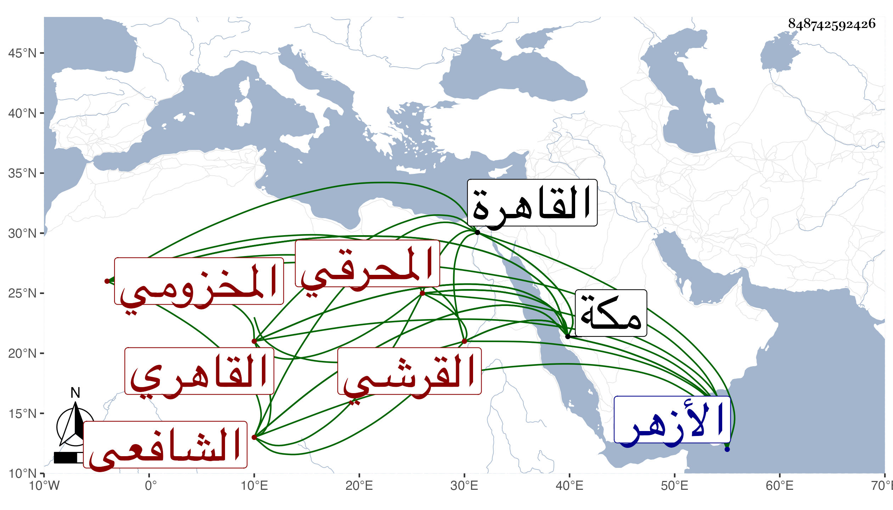

0902Sakhawi.DawLamic.ITO20230111-ara1.EIS1600.848742592426
Biography ID: 848742592426
491
أحمد بن محمد بن محمد بن أبي بكر بن أيوب البهاء أبو الفضل بن البدر أبي البقاء بن فتح الدين أبي عبد الله وأبي الفتح القرشي المخزومي المحرقي الأصل القاهري الشافعي الآتي جده وولده يحيى وأخوه المحب محمد والبهاء الأصغر ويعرف كسلفه بابن المحرقي . ولد بعد ظهر السبت ثالث عشري رجب سنة أربع وأربعين وثمانمائة بالقرب من الأزهر ، ونشأ فحفظ القرآن والعمدة والمنهاجين الفرعي والأصلي وألفية النحو ، وأخذ الفقه عن المناوي قرأ عليه المنهاج بحثا وعن العبادي وصاهره على ربيبته ابنة المسطيهي والفخر عثمان المقسي والزين زكريا والجلال البكري قراءة وسماعا ولازمهم في التقاسيم ومما قرأه على الزين العجالة والأصول عن الأول سمع عليه المنهاج الأصلي وإمام الكاملية قرأ عليه قطعة من شرحه له وقرأ كثيرا من الفقه وأصوله على أبي السعادات البلقيني والعربية بمكة عن أحمد بن يونس المغربي والشهاب التغلبي وبالقاهرة على البرهان الحلبي والجوجري والسنهوري ومما قرأه عليهما التوضيح لابن هشام وعلى ثانيهما من شرح إيساغوجي والفرائض والحساب عن الشهاب السجيني والميقات عن العز الوفائي والنور النقاش والبدر المارداني قرأ عليهم رسالتي الجيب والمقنطرات للجمال المارداني جد الأخير لأمه وبعض شرح ألفية العراقي عن الزين قاسم الحنفي وعلم الكلام مع فنون كثيرة عن التقي الحصني ومما قرأه عليه شرح العقائد للتفتازاني وكذا أخذ عن الكافياجي بعض تصانيفه وغيره ، وسمع الحديث بمكة في سنة خمس وستين على الزين الأميوطي والتقي بن فهد وبمنى في أيامها على النجم محمد بن أحمد بن عبد الله القلقشندي وكان حج في موسم التي قبلها ثم جاور وسمع بعد ذلك سنة ست وسبعين بالقاهرة على الشهاب الشاوي والزين عبد الصمد الهرساني والبهاء المشهدي والخيضري شاركه في الأربعة ابنه المشار إليه ، واجتمع في مكة بكل من عبد الكبير الحضرمي وإدريس اليماني ومحمد الزعيفريني وأذن له كل من العبادي وأبي السعادات في الإفتاء والتدريس بعد امتحان ثانيهما له في مسائل كثيرة من فنون متعددة وكذا أذن له الحصني في إقراء شرح العقائد وكل من الجوجري والسنهوري في إقراء التوضيح والعربية وفي الإفتاء وثانيهما في إقراء شرح إيساغوجي ، وحلق في الأزهر وأسمع الحديث وخطب بالأزهر وبجامع عمرو بل استقر به الأشرف قايتباي في خطابة تربته وحمدت خطابته وحسن تأديته مع سكونه وحشمته والجماعة وربما خطب بالسلطان في جامع القلعة حين يعرض للقاضي توعك .
